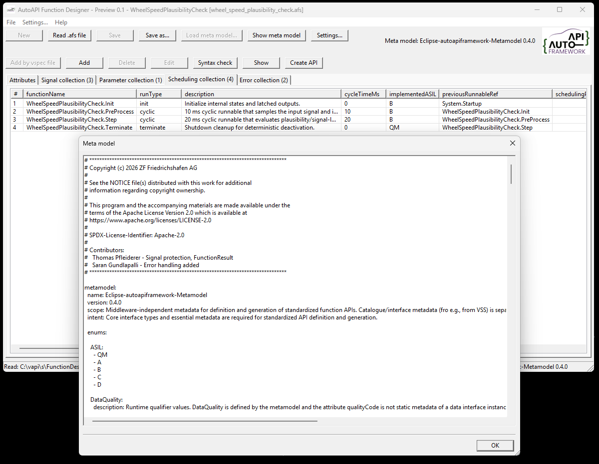
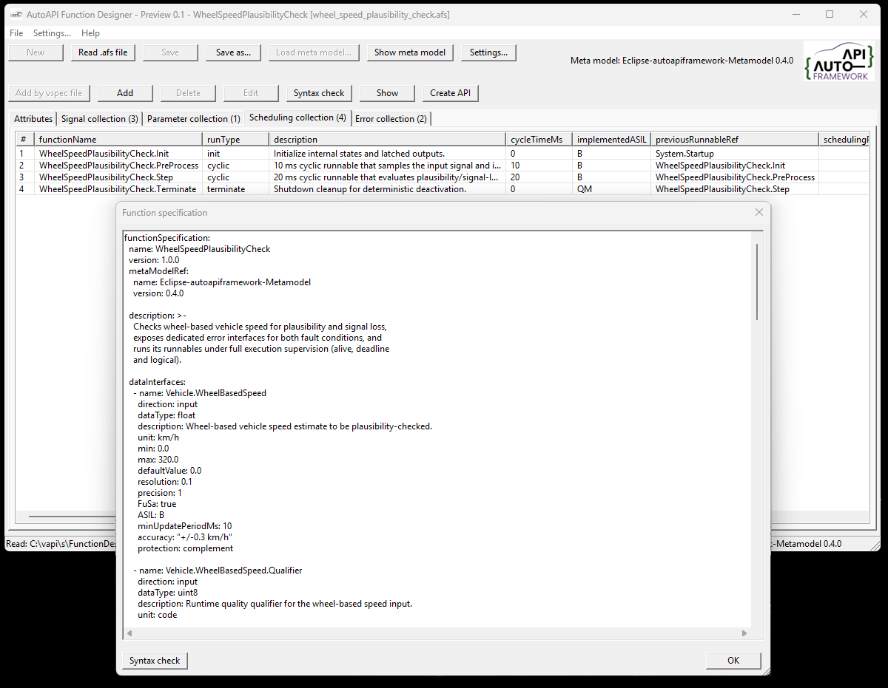
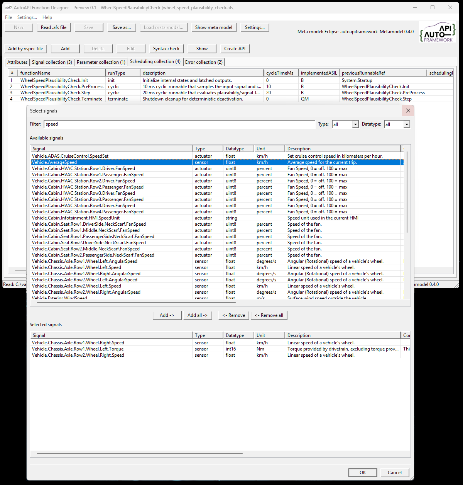
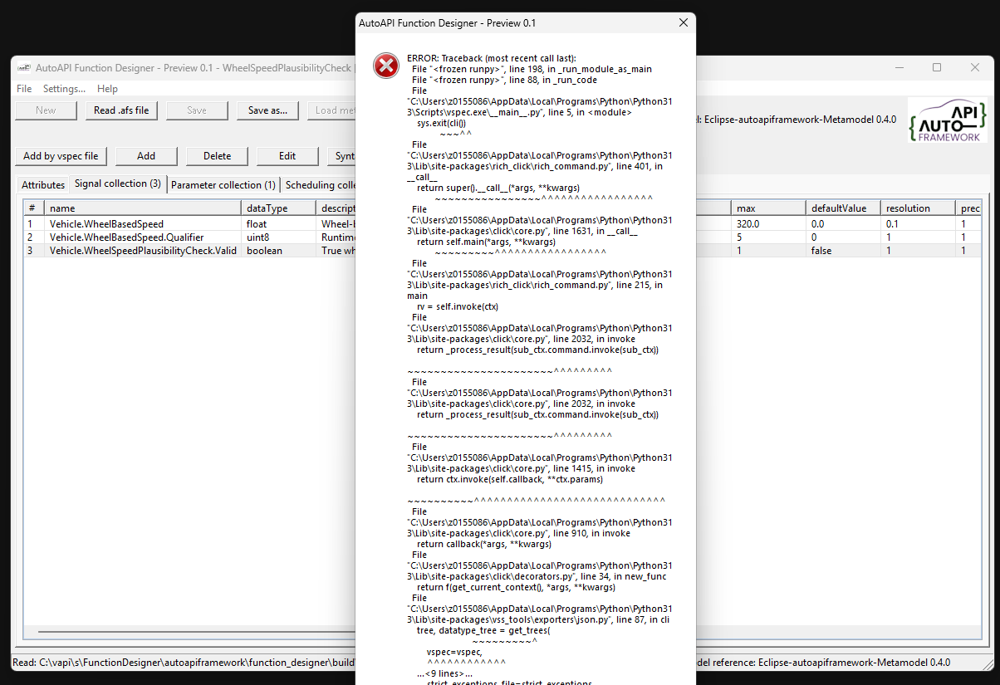
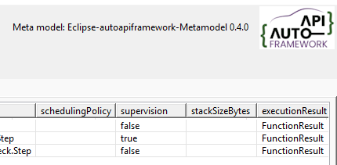
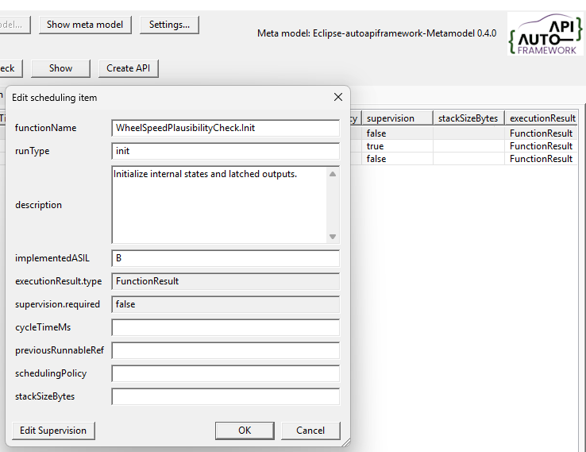
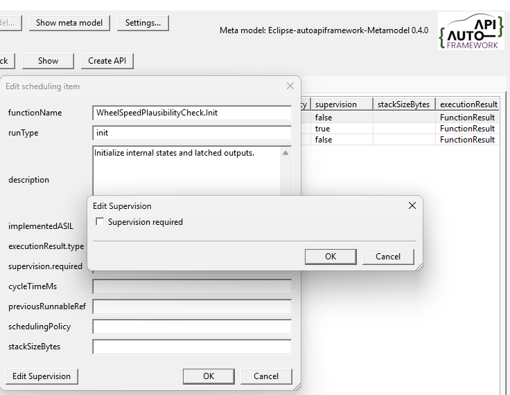
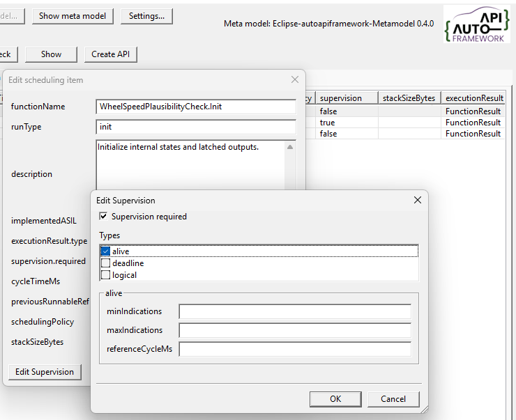

Application Purpose and Use#
The Function Designer is an application for viewing and editing Eclipse autoapiframework function specifications.

Purpose#
The AutoAPI Function Designer is a desktop editor for Eclipse autoapiframework function specifications. It provides a human-readable view of function API metadata and preserves the YAML document structure when a specification is written again.
The application works with two related files:
A function specification (
.afs), which describes one function’s data interfaces, parameters, scheduling, and error interfaces.A meta model (YAML), which defines the supported interface types, properties, and enumerations used to interpret the function specification.
The current example meta model is
examples/autoapiframework_metadata_V04.yaml.
Main Views#
When you open an .afs file, the application displays its contents in
separate views:
- Attributes
Shows the function name, version, meta-model reference, collection sizes, and full description.
- Data interfaces
Shows entries from
dataInterfaces. Columns are derived from the meta-model’sDatainterface type.- Parameters
Shows entries from
parameters. Columns are derived from the meta-model’sParameterinterface type.- Scheduling
Shows entries from
scheduling. Columns are derived from the meta-model’sSchedulinginterface type, including execution supervision details.- Error interfaces
Shows entries from
errorInterfaces. Columns are derived from the meta-model’sErrorinterface type and describe function-specific diagnostic conditions separately from a runnable’s generic execution result.
Properties that occur in a specification but are not defined by the meta model are retained and displayed as additional columns. This allows newer or project-specific metadata to remain visible during inspection.

Typical Workflow#
Start the application. It loads the configured meta model, if available. If the file cannot be found, the application automatically looks for
autoapiframework_meta_model.yaml.Open an existing
.afsfile.Confirm that the referenced meta-model version is supported.
Inspect attributes, data interfaces, parameters, scheduling, and error interfaces in their respective views.
Use ‘Load meta model…’ if the meta model is not found in the same directory as the executable, or if you need to load a different compatible meta model. You must restart the application for the change to take effect.
Use ‘Write .afs file as…’ to save the specification under a new name.
Use ‘Add via VSS’ to import signal information from a VSS file.
The editor keeps the parsed YAML tree in memory. When the file is written, key order, block-style layout, folded descriptions, and quoting are preserved as far as supported by the YAML writer.
Limitations#
The ‘Create API’ functionality is still under development.
Tip
To create a valid specification file, you must carefully review the meta model specification. The syntax check will help identify obvious errors, but it cannot guarantee full compliance with the meta model.
Working with VSS Signals#
The ‘Add via VSS’ workflow imports signal information from a VSS file. The
application uses the vspec executable provided by vss-tools to convert
the selected .vspec file to JSON, after which the signal can be added to
the function specification.
The official VSS repository can be cloned with:
git clone https://github.com/COVESA/vehicle_signal_specification.git
For a direct conversion, run:
vspec export json --vspec spec/Vehicle/Vehicle.vspec --output VehicleSignalSpecification.json

After you click ‘Add via VSS’, you are prompted to select a VSS file. The signals it contains are then displayed.
If an error message appears, the selected VSS file may depend on other VSS files. In this case, open the root VSS file instead.

Supervision#
The supervision functionality allows you to monitor the execution of the function
and detect any anomalies or errors. In the collection view it is shown as true
or false meaning required or not required.

It can be enabled or disabled for each function, allowing you to control which
functions are actively supervised during execution. To do this, open the Edit dialog,
there is a Edit Supervision button to configure the supervision settings.

If not required, the nodes are not available for editing.

When supervision is required, select one or more supervision types. Each type has its own configuration fields:
alive: set the minimum and maximum number of indications and the reference cycle in milliseconds.
deadline: set the minimum and maximum execution time in milliseconds.
logical: list the predecessor and successor references used for logical supervision. Enter multiple references as a comma-separated list.
Only the settings for selected types are available for editing and written to the specification. If no type is selected, the supervision configuration contains no type-specific settings.

Examples#
The examples directory contains ready-to-use specifications, including:
speed_hazard_detection.afsvehicle_speed_fusion_multirate.afswheel_speed_plausibility_check.afs
These files can be opened to explore data interfaces, parameters, scheduling, execution supervision, and function-specific error interfaces.